Orbit plots with octoplot
octoplot(model, chain) is the one-call summary of a fit: the orbits on the sky, your data with the model drawn through it, and residuals underneath. This page starts from that figure and then works through the changes people most often want to make to it — different panels, a different time range, fewer orbits, one panel on its own for a paper.
You do not need to know anything about Makie to follow it. Everything up to Advanced topics is a short recipe you can paste next to your own octoplot call.
The example fit
Every example below uses the fit built here — one planet, relative astrometry from one instrument, and radial velocities from two spectrographs. If you already have your own model and chain, skip this block; everything on the page applies unchanged.
using Octofitter, Distributions, CairoMakie, PairPlots
A = Body(
name="A",
variables=@variables begin
mass ~ truncated(Normal(1.2, 0.1), lower=0.1) # [M⊙]
end
)
b = Body(
name="b",
about=A,
variables=@variables begin
mass ~ LogUniform(1mjup, 100mjup) # [M⊙]
a ~ Uniform(0.5, 20) # [AU]
e ~ Uniform(0.0, 0.6)
i ~ Sine() # [rad]
ω ~ Uniform(0, 2pi) # [rad]
Ω ~ Uniform(0, 2pi) # [rad]
θ ~ Uniform(0, 2pi) # [rad]
epoch = 57000.0 # [MJD]
end
)
astrom = RelAstromObs(
Table(
epoch = [55927.0, 56444.0, 57023.0, 57754.0, 58484.0, 59366.0],
ra = [-102.40, -36.35, 137.31, -101.39, 22.67, 23.57],
dec = [29.74, 165.11, 12.63, 9.38, 152.21, -99.09],
σ_ra = fill(5.0, 6),
σ_dec = fill(5.0, 6),
cor = fill(0.0, 6),
);
target=b, ref=A, name="GPI"
)
harps = RadialVelocityObs(
Table(
epoch = [55927.0, 56191.5, 56456.1, 56720.6, 56985.2, 57249.7, 57514.2,
57778.8, 58043.3, 58307.8, 58572.4, 58836.9, 59101.5, 59366.0],
rv = [411.6, 595.4, 427.9, 108.1, -304.2, -707.8, -523.4,
379.2, 600.0, 419.4, 134.6, -289.9, -693.1, -562.2],
σ_rv = fill(6.0, 14),
);
target=A, ref=Barycentre, name="HARPS",
variables=@variables begin
offset ~ Uniform(-500, 500)
jitter ~ LogUniform(0.1, 30)
end
)
hires = RadialVelocityObs(
Table(
epoch = [56809.0, 57076.3, 57343.7, 57611.0, 57878.3,
58145.7, 58413.0, 58680.3, 58947.7, 59215.0],
rv = [84.4, -339.0, -653.4, -50.1, 660.3, 684.6, 426.0, 74.1, -355.1, -641.2],
σ_rv = fill(9.0, 10),
);
target=A, ref=Barycentre, name="HIRES",
variables=@variables begin
offset ~ Uniform(-500, 500)
jitter ~ LogUniform(0.1, 30)
end
)
sys = System(
name="HD12345",
bodies=[A, b],
observations=[astrom, harps, hires],
variables=@variables begin
plx ~ truncated(Normal(50.0, 0.02), lower=0.1)
end
)
model = Octofitter.LogDensityModel(sys)
init_chain = initialize!(model, (; bodies=(; b=(; a=3.2, e=0.25),),))
chain = octofit(model, iterations=1000)[ Info: [HD12345] observing_geometry = true (auto): would bias "HARPS" by 0.126σ (0.0338σ per point × √14) — over 300 prior draws (seed 0xc70f177e5000001)
[ Info: [HD12345] barycentric_lighttime = false (auto): changes no prediction at all — over 300 prior draws (seed 0xc70f177e5000001)
[ Info: [HD12345] "HARPS": Einstein term, peak-to-peak [m/s] ≈ 0.00111 (0.000185× its tightest σ = 6.0)
[ Info: [HD12345] "HARPS": secular-acceleration drift, peak-to-peak [m/s] ≈ 0.0 (0.0× its tightest σ = 6.0)
[ Info: [HD12345] "HIRES": Einstein term, peak-to-peak [m/s] ≈ 0.000934 (0.000104× its tightest σ = 9.0)
[ Info: [HD12345] "HIRES": secular-acceleration drift, peak-to-peak [m/s] ≈ 0.0 (0.0× its tightest σ = 9.0)
[ Info: Preparing model
┌ Info: Determined number of free variables
└ D = 13
┌ Info: Determined number type
└ T = Float64
ℓπcallback(θ): 0.000014 seconds
∇ℓπcallback(θ): 0.000086 seconds (1 allocation: 32 bytes)
[ Info: Initializing with 2 fixed parameters
┌ Info: Starting values not provided for all parameters! Guessing starting point using global optimization:
│ num_params = 11
└ num_fixed = 2
┌ Info: Found sample of initial positions
│ logpost_range = (-140.63999716192532, -129.37366474340132)
└ mean_logpost = -132.97706876277414
[ Info: Sampling, beginning with adaptation phase...
Sampling 11%|███▌ | ETA: 0:00:03
iterations: 223
ratio_divergent_transitions: 0.0
ratio_divergent_transitions_during_adaption: 0.06
n_steps: 63
is_accept: true
acceptance_rate: 0.9723942149100893
log_density: -136.2107606770062
hamiltonian_energy: 142.97243103566706
hamiltonian_energy_error: -0.8833022720279473
max_hamiltonian_energy_error: -0.9157447511384476
tree_depth: 6
numerical_error: false
step_size: 0.058349736970354706
nom_step_size: 0.058349736970354706
is_adapt: true
mass_matrix: DenseEuclideanMetric([9.10587e-5, 0.00190765, 0. ...])
Sampling 14%|████▍ | ETA: 0:00:03
iterations: 283
ratio_divergent_transitions: 0.0
ratio_divergent_transitions_during_adaption: 0.07
n_steps: 6
is_accept: true
acceptance_rate: 0.0002693808997577596
log_density: -134.64401778153174
hamiltonian_energy: 143.51790309209323
hamiltonian_energy_error: 0.0
max_hamiltonian_energy_error: 1966.4168949781467
tree_depth: 2
numerical_error: true
step_size: 0.11914269467303873
nom_step_size: 0.11914269467303873
is_adapt: true
mass_matrix: DenseEuclideanMetric([4.77913e-5, 0.00374303, 0. ...])
Sampling 17%|█████▍ | ETA: 0:00:03
iterations: 349
ratio_divergent_transitions: 0.0
ratio_divergent_transitions_during_adaption: 0.07
n_steps: 63
is_accept: true
acceptance_rate: 0.9271962897690892
log_density: -133.1611231989928
hamiltonian_energy: 144.30485452819508
hamiltonian_energy_error: -0.04411689977027322
max_hamiltonian_energy_error: 0.20338500003450122
tree_depth: 6
numerical_error: false
step_size: 0.051078077866539666
nom_step_size: 0.051078077866539666
is_adapt: true
mass_matrix: DenseEuclideanMetric([4.77913e-5, 0.00374303, 0. ...])
Sampling 22%|██████▊ | ETA: 0:00:02
iterations: 438
ratio_divergent_transitions: 0.0
ratio_divergent_transitions_during_adaption: 0.06
n_steps: 63
is_accept: true
acceptance_rate: 0.948756915143115
log_density: -138.45599976263878
hamiltonian_energy: 144.77447974838515
hamiltonian_energy_error: -0.4816686580260239
max_hamiltonian_energy_error: -0.9049653570398561
tree_depth: 5
numerical_error: false
step_size: 0.06608868444173711
nom_step_size: 0.06608868444173711
is_adapt: true
mass_matrix: DenseEuclideanMetric([4.77913e-5, 0.00374303, 0. ...])
Sampling 26%|████████▎ | ETA: 0:00:02
iterations: 530
ratio_divergent_transitions: 0.0
ratio_divergent_transitions_during_adaption: 0.07
n_steps: 31
is_accept: true
acceptance_rate: 0.8871727157336828
log_density: -136.88607237694387
hamiltonian_energy: 142.23495786508605
hamiltonian_energy_error: 0.3729882619502405
max_hamiltonian_energy_error: 0.41015606740904786
tree_depth: 5
numerical_error: false
step_size: 0.11482525368192262
nom_step_size: 0.11482525368192262
is_adapt: true
mass_matrix: DenseEuclideanMetric([2.45901e-5, 0.00418924, 0. ...])
Sampling 33%|██████████▎ | ETA: 0:00:02
iterations: 664
ratio_divergent_transitions: 0.0
ratio_divergent_transitions_during_adaption: 0.07
n_steps: 15
is_accept: true
acceptance_rate: 0.9952261138464664
log_density: -133.59226292857056
hamiltonian_energy: 147.5009751418108
hamiltonian_energy_error: -0.5535491979591427
max_hamiltonian_energy_error: -0.641151003621161
tree_depth: 4
numerical_error: false
step_size: 0.11332993722003866
nom_step_size: 0.11332993722003866
is_adapt: true
mass_matrix: DenseEuclideanMetric([2.45901e-5, 0.00418924, 0. ...])
Sampling 40%|████████████▍ | ETA: 0:00:02
iterations: 797
ratio_divergent_transitions: 0.0
ratio_divergent_transitions_during_adaption: 0.06
n_steps: 63
is_accept: true
acceptance_rate: 0.8728304862209202
log_density: -136.85890657430568
hamiltonian_energy: 144.3520119605771
hamiltonian_energy_error: 0.13179323795219489
max_hamiltonian_energy_error: 0.5186748128527938
tree_depth: 6
numerical_error: false
step_size: 0.07591952289780256
nom_step_size: 0.07591952289780256
is_adapt: true
mass_matrix: DenseEuclideanMetric([2.45901e-5, 0.00418924, 0. ...])
Sampling 47%|██████████████▋ | ETA: 0:00:01
iterations: 947
ratio_divergent_transitions: 0.0
ratio_divergent_transitions_during_adaption: 0.05
n_steps: 31
is_accept: true
acceptance_rate: 0.7950771584276548
log_density: -133.30887930656323
hamiltonian_energy: 140.63496312051072
hamiltonian_energy_error: 0.01849685904628018
max_hamiltonian_energy_error: 0.6201770028089015
tree_depth: 5
numerical_error: false
step_size: 0.10750011309122365
nom_step_size: 0.10750011309122365
is_adapt: true
mass_matrix: DenseEuclideanMetric([2.45901e-5, 0.00418924, 0. ...])
Sampling 55%|█████████████████ | ETA: 0:00:01
iterations: 1099
ratio_divergent_transitions: 0.0
ratio_divergent_transitions_during_adaption: 0.05
n_steps: 31
is_accept: true
acceptance_rate: 0.9820124588214942
log_density: -132.72142668297778
hamiltonian_energy: 137.12037539221814
hamiltonian_energy_error: 0.05309931082183539
max_hamiltonian_energy_error: 0.09480752535333181
tree_depth: 5
numerical_error: false
step_size: 0.13563370715128212
nom_step_size: 0.13563370715128212
is_adapt: false
mass_matrix: DenseEuclideanMetric([1.0049e-5, 0.003366, 0.005 ...])
Sampling 64%|███████████████████▊ | ETA: 0:00:01
iterations: 1271
ratio_divergent_transitions: 0.0
ratio_divergent_transitions_during_adaption: 0.05
n_steps: 31
is_accept: true
acceptance_rate: 0.8220100117434751
log_density: -133.25964649587627
hamiltonian_energy: 140.91356799363172
hamiltonian_energy_error: -0.23077769028276407
max_hamiltonian_energy_error: 0.6960233903602386
tree_depth: 5
numerical_error: false
step_size: 0.13563370715128212
nom_step_size: 0.13563370715128212
is_adapt: false
mass_matrix: DenseEuclideanMetric([1.0049e-5, 0.003366, 0.005 ...])
Sampling 72%|██████████████████████▍ | ETA: 0:00:01
iterations: 1441
ratio_divergent_transitions: 0.0
ratio_divergent_transitions_during_adaption: 0.05
n_steps: 31
is_accept: true
acceptance_rate: 0.9624051535274427
log_density: -136.68489399794757
hamiltonian_energy: 140.31284271274995
hamiltonian_energy_error: 0.0494171640866341
max_hamiltonian_energy_error: -0.18044827898447124
tree_depth: 4
numerical_error: false
step_size: 0.13563370715128212
nom_step_size: 0.13563370715128212
is_adapt: false
mass_matrix: DenseEuclideanMetric([1.0049e-5, 0.003366, 0.005 ...])
Sampling 81%|█████████████████████████ | ETA: 0:00:00
iterations: 1612
ratio_divergent_transitions: 0.0
ratio_divergent_transitions_during_adaption: 0.05
n_steps: 31
is_accept: true
acceptance_rate: 0.9597987244572999
log_density: -135.5819355807257
hamiltonian_energy: 144.46191981262882
hamiltonian_energy_error: 0.12168029473627939
max_hamiltonian_energy_error: -0.2898820220702021
tree_depth: 5
numerical_error: false
step_size: 0.13563370715128212
nom_step_size: 0.13563370715128212
is_adapt: false
mass_matrix: DenseEuclideanMetric([1.0049e-5, 0.003366, 0.005 ...])
Sampling 89%|███████████████████████████▋ | ETA: 0:00:00
iterations: 1783
ratio_divergent_transitions: 0.0
ratio_divergent_transitions_during_adaption: 0.05
n_steps: 31
is_accept: true
acceptance_rate: 0.9942989190928925
log_density: -133.30447751127437
hamiltonian_energy: 141.34911096313
hamiltonian_energy_error: -0.1981779779584656
max_hamiltonian_energy_error: -0.39086654321968695
tree_depth: 5
numerical_error: false
step_size: 0.13563370715128212
nom_step_size: 0.13563370715128212
is_adapt: false
mass_matrix: DenseEuclideanMetric([1.0049e-5, 0.003366, 0.005 ...])
Sampling 98%|██████████████████████████████▎| ETA: 0:00:00
iterations: 1954
ratio_divergent_transitions: 0.0
ratio_divergent_transitions_during_adaption: 0.05
n_steps: 15
is_accept: true
acceptance_rate: 0.915854506339221
log_density: -133.36878567166596
hamiltonian_energy: 139.5676702797295
hamiltonian_energy_error: 0.09012777787765458
max_hamiltonian_energy_error: 0.171547659338529
tree_depth: 4
numerical_error: false
step_size: 0.13563370715128212
nom_step_size: 0.13563370715128212
is_adapt: false
mass_matrix: DenseEuclideanMetric([1.0049e-5, 0.003366, 0.005 ...])
Sampling 100%|███████████████████████████████| Time: 0:00:01
iterations: 2000
ratio_divergent_transitions: 0.0
ratio_divergent_transitions_during_adaption: 0.05
n_steps: 31
is_accept: true
acceptance_rate: 1.0
log_density: -131.4822098225382
hamiltonian_energy: 134.9022912968634
hamiltonian_energy_error: -0.11224021716463994
max_hamiltonian_energy_error: -0.3365553359692228
tree_depth: 5
numerical_error: false
step_size: 0.13563370715128212
nom_step_size: 0.13563370715128212
is_adapt: false
mass_matrix: DenseEuclideanMetric([1.0049e-5, 0.003366, 0.005 ...])
[ Info: Sampling compete. Building chains.
Sampling report for chain:
mean_accept = 0.9142895611170201
ratio_divergent_transitions = 0.0
mean_tree_depth = 4.676
max_tree_depth_frac = 0.0
total_steps = 55928
μs/step (approx.) = 36.3The default figure
using CairoMakie # a Makie backend must be loaded before plotting
octoplot(model, chain)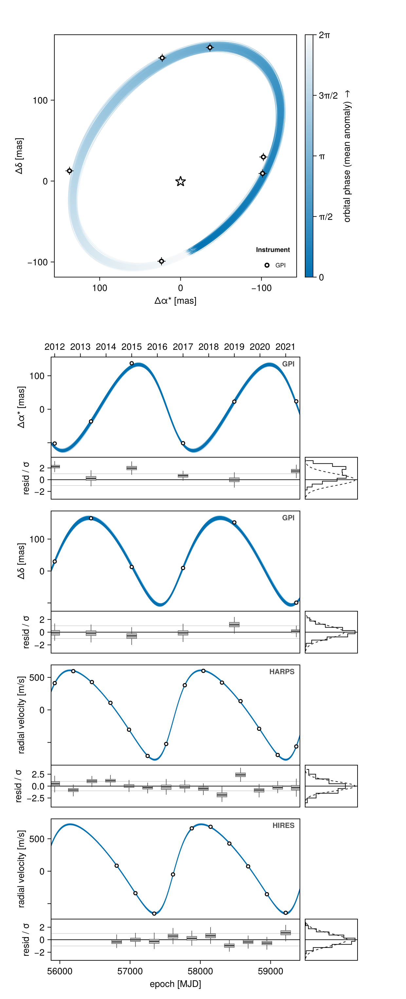
Reading it from the top:
- The sky panel. One orbit track per planet, drawn once for each posterior sample, coloured by orbital phase. The star sits at the origin, and right ascension increases to the left, as it does on the sky. Your relative astrometry is overlaid, labelled by instrument.
- One panel per measured quantity, per instrument. Here that is Δα* and Δδ from the GPI astrometry, then radial velocity from HARPS and from HIRES on separate panels. All of these share one horizontal axis: calendar dates along the top of the figure, MJD numbers along the bottom.
- A residual strip under each panel, with a marginal histogram at its right.
A few words are used throughout the rest of the page, and they all mean something small and concrete:
| Word | What it means |
|---|---|
| panel | One of the stacked plots — the sky panel, the HARPS panel, and so on. |
| draw | One sample from your chain. octoplot overplots many, which is why each panel shows a bundle of curves rather than a single line. |
| channel | One measured quantity from one observation: sep, pa, raoff, decoff, rv, … Panels are built one per channel. |
| row | One orbit in your model — one Body(..., about=...). This model has a single row, planet b about star A. Rows only matter for phase folds and for building your own figure. |
What you get back
octoplot returns an OctoPlotResult. It displays as the figure, and it also carries the pieces you need in order to change anything:
res = octoplot(model, chain)
res.figure # the Makie Figure — pass this to `save`
res.axes # the panels, by name
res.series # the solved orbits behind every panelres.axes names every panel. Print the keys to see what your own model produced:
keys(res.axes)(:sky, :raoff, :decoff, :rv_HARPS, :rv_HIRES)sky is the sky panel; the rest are named after the channel they show. Where several instruments measure the same quantity, the instrument name is appended — rv_HARPS, rv_HIRES — because rv alone would no longer identify one panel. Each entry is itself a small named group:
keys(res.axes.rv_HARPS) # main plot, residual strip, marginal histogram(:main, :resid, :hist)So res.axes.rv_HARPS.main is an ordinary Makie Axis that you can set a title or limits on. The sky panel's axis is res.axes.sky.sky.
Draw fewer orbits
By default octoplot solves 250 draws from your posterior, chosen without replacement with a fixed seed so that reruns and separate panels agree.
octoplot(model, chain, N=50) # faster, lighter figureoctoplot(model, chain, N=250, seed=42) # a different, still reproducible subsetN sets how many draws are computed. ndraws caps how many each panel actually renders, which is what you want if a light-looking plot should still be backed by a well-sampled posterior:
octoplot(model, chain, N=250, ndraws=25)ndraws=1 is a special case worth knowing: with a single draw the residuals are shown in data units rather than whitened, phase-folded panels appear, and correlated-noise bands are drawn. See Show a single orbit.
Choose which panels appear
Two keywords do almost all of this.
show_sky=false drops the sky panel:
octoplot(model, chain; show_sky=false)channels= restricts the figure to some of the measurements. It takes a channel name as a Symbol (:sep, :pa, :raoff, :decoff, :rv), an observable function (radvel, pmra, projectedseparation, …), or a collection of either:
octoplot(model, chain; channels=radvel, show_sky=false)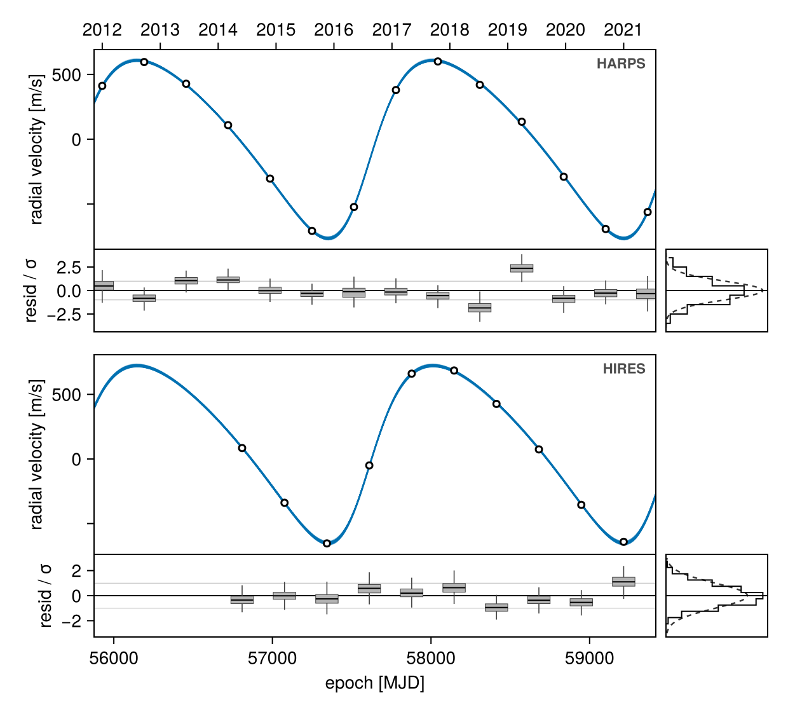
octoplot(model, chain; channels=(:raoff, :decoff)) # astrometry only, sky keptRelative astrometry is special in a useful way: whether your table holds ra/dec or sep/pa, both parametrizations are available, because one is a parameter-free rotation of the other. The figure above was fitted to ra/dec, and asking for separation works anyway:
octoplot(model, chain; channels=:sep, show_sky=false)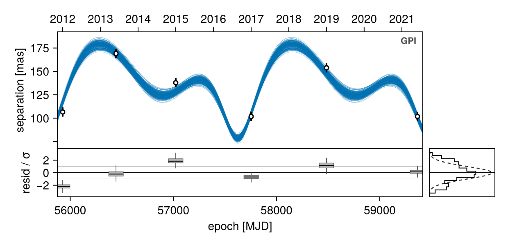
Nothing is written to disk by any of these calls unless you pass fname=.
Plot a quantity you didn't measure
Naming an observable that your model has no data for draws it as a prediction: the model curves alone, with nothing to compare them to. This fit contains no proper-motion data, but the orbit implies a reflex proper motion:
octoplot(model, chain; channels=pmra, show_sky=false)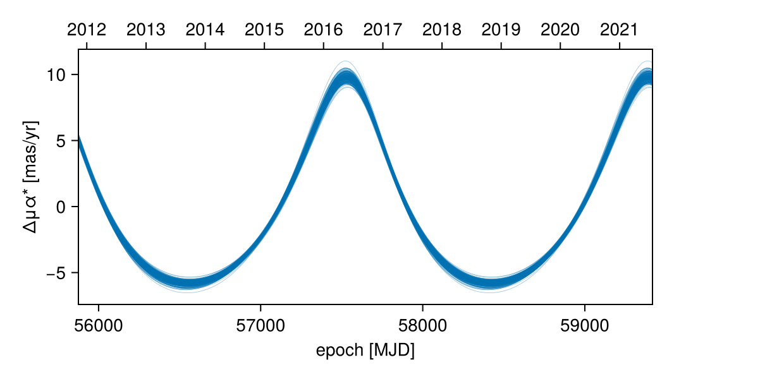
This is how you ask a fit what signal it implies before spending telescope time on it — channels=radvel on an astrometry-only fit is the common case. Note that this only happens for an observable (radvel, pmra); naming a channel (channels=:rv) means "the RV data", and asking for data a fit does not have is not a request to invent it.
Set the time range
The model curves are drawn over an epoch grid octoplot chooses: your data, padded slightly and widened to at least one orbital period. You can see it:
res = octoplot(model, chain; N=50)
mjd2date.(extrema(res.series.ts))(Dates.DateTime("2011-11-10T09:57:36"), Dates.DateTime("2021-07-22T14:02:24"))tmin= and tmax= move either end of it. Each takes an MJD number, a date string, or a Date — so this is how you ask what the orbit does after your last measurement:
octoplot(model, chain; N=50, tmax="2035-01-01")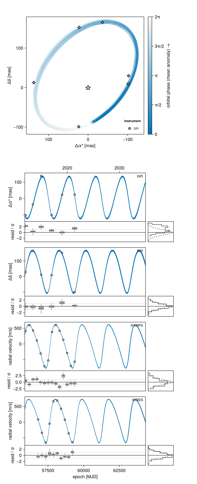
The point density is unchanged (the grid is still sized per orbital period), and only the end you name moves; the other one is still derived from the data. ts= replaces the grid outright with epochs of your own:
octoplot(model, chain; N=50, ts=mjd("2015-01-01"):30.0:mjd("2025-01-01"))These belong to the PosteriorSeries, so if you build one yourself, pass them there instead — PosteriorSeries(model, chain; tmax="2035-01-01") — and rvplot takes them too.
To zoom in on a range the grid already covers, every time panel shares one x axis, so setting the limits on any of them moves the whole stack:
res = octoplot(model, chain; N=50)
xlims!(res.axes.raoff.main, mjd("2012-01-01"), mjd("2018-01-01"))
res.figure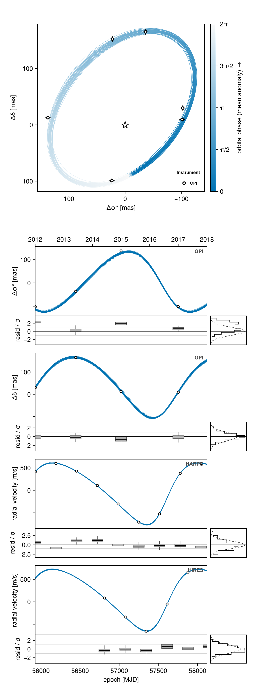
xlims! cannot show you anything outside the grid, though: there is no curve out there to draw, so zooming out past it gives empty axes. Use tmin/tmax for that.
To evaluate the orbit at particular epochs and get numbers back rather than a plot, solve the system directly — see Positions at future epochs.
Change titles, labels and limits
res.axes gives you the panels by name, so anything Makie can do to an Axis, you can do here:
res = octoplot(model, chain; N=50)
res.axes.sky.sky.title = "HD 12345 b"
res.axes.rv_HARPS.main.ylabel = "RV [m/s]"
ylims!(res.axes.rv_HIRES.main, -900, 900)
res.figure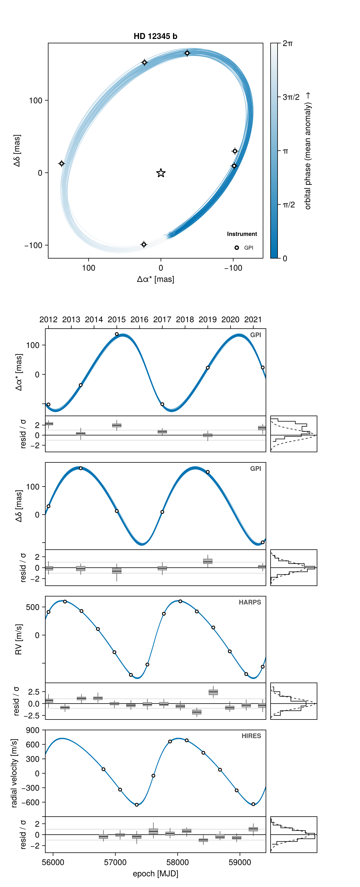
legend=false removes the instrument key from the sky and shared data panels, and figscale= scales the whole figure at once.
Save the figure
Either pass fname= and let octoplot write it, or save res.figure yourself:
octoplot(model, chain; fname="orbit.png")
res = octoplot(model, chain)
save("orbit.png", res.figure)
save("orbit.pdf", res.figure) # vector output, good for a journal
save("orbit.svg", res.figure) # vector output, good for further editing
save("orbit.png", res.figure, px_per_unit=4) # higher-resolution rasterWith CairoMakie (the usual choice for publication figures) all three formats work. GLMakie gives you an interactive window you can zoom and pan before saving, but only writes PNG.
Some plot elements are rasterized internally for performance, so very large px_per_unit values stop improving quality. If you need a truly resolution-free figure, save PDF or SVG.
One panel on its own
For a paper you often want one panel by itself, at your own size and aspect ratio. Build a PosteriorSeries — the solved orbits, computed once — and hand it to the panel function directly.
entries says which observation and which channel the panel should draw. plotchannels lists the channels an observation exposes:
series = Octofitter.PosteriorSeries(model, chain; N=100)
entries = [(astrom, ch) for ch in Octofitter.plotchannels(astrom) if ch.name === :raoff]
fig = Figure(size=(600, 320))
timeseriespanel!(fig[1, 1], series, entries)
fig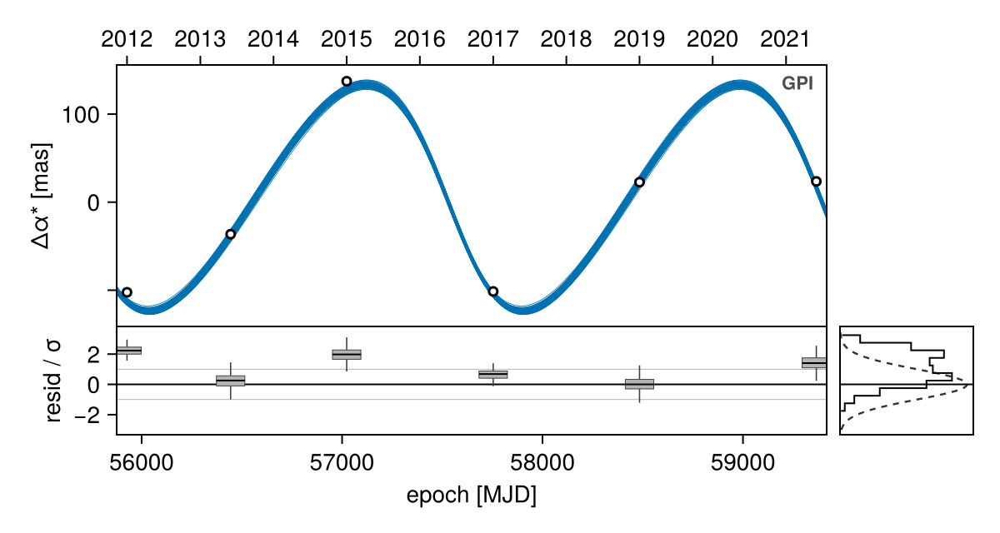
The panel brings its own residual strip and marginal histogram, as it does inside octoplot; show_hist=false drops the histogram. The sky panel needs no entries at all:
fig = Figure(size=(500, 500))
skypanel!(fig[1, 1], series)
fig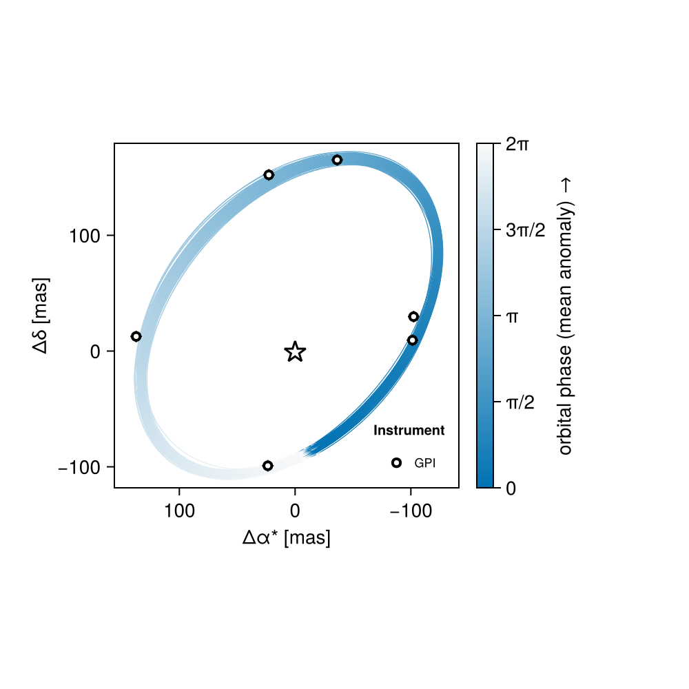
Lay out your own figure
The panels are ordinary Makie recipes taking a grid position, so you can arrange them however you like — side by side, for instance:
fig = Figure(size=(1100, 480))
skypanel!(fig[1, 1], series; colorbar=false)
timeseriespanel!(fig[1, 2], series, entries)
colsize!(fig.layout, 1, Aspect(1, 1.0))
fig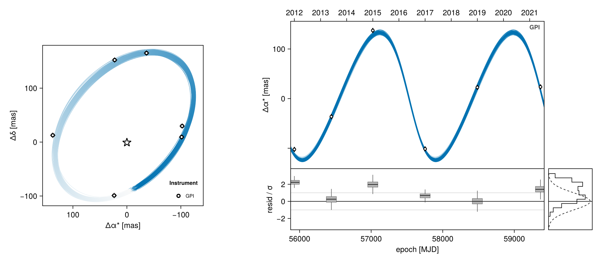
The three panel builders are skypanel!, timeseriespanel! and phasefoldpanel!. They all take a grid position first and the same PosteriorSeries second, so every panel in your figure shows the same draws.
Phase-folded panels
A phase fold collapses the epoch axis onto one orbital period. octoplot leaves these off by default — see Why phase folds are off by default — and show_phase=true asks for them:
octoplot(model, chain; channels=radvel, show_sky=false, show_phase=true, N=100)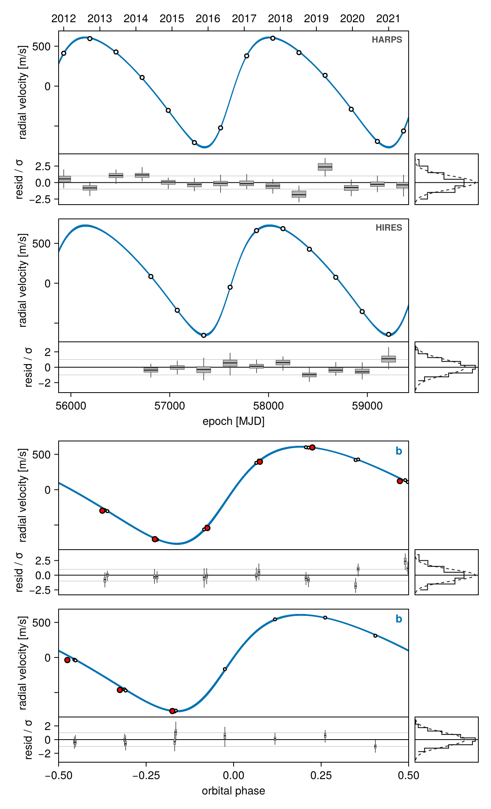
Each fold gets its own panel, named after the channel and the row it was folded on (rv_HARPS_phase_b). show_phase=true folds every channel that can be folded, not only radial velocity, so a well-sampled astrometric orbit can be folded too:
octoplot(model, chain; channels=posangle, show_sky=false, show_phase=true)For the conventional single-draw radial-velocity figure with phase folds and binned means, use rvplot instead — see Radial Velocity Figures.
Show a single orbit
Passing ndraws=1 renders one draw. Because there is then a single set of parameters, residuals are shown in data units, phase folds appear, and any correlated-noise band is drawn:
octoplot(model, chain; ndraws=1)To choose which draw, either slice the chain or build the series yourself:
i_map = argmax(chain[:logpost][:]) # the maximum-posterior sample
octoplot(model, chain[i_map:i_map, :, :]) # by slicing
series_map = Octofitter.PosteriorSeries(model, chain; ii=[i_map])
octoplot(series_map) # by building the seriesSlicing works for every plotting function, not just this one.
Colours and marker styles
By default each orbit gets an accent colour that its sky track and its panels share, and each instrument on a shared panel gets its own colour and its own marker shape (so datasets stay separable in greyscale print). legend=false drops the instrument key.
curvecolor= sets the model curves' colour. One colour applies to the whole figure:
octoplot(model, chain; N=50, curvecolor=:firebrick)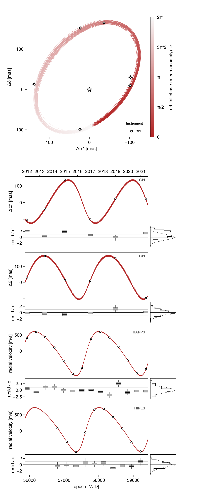
The sky panel builds its phase ramp from that colour rather than replacing it, so the tracks still fade with orbital phase. To recolour one orbit at a time in a multi-planet fit, pass a NamedTuple or Dict keyed by body name; a body you do not name keeps its default:
octoplot(model, chain; N=50, curvecolor=(; b=:firebrick))The key is a body because that is what a colour means here: :b recolours planet b's sky track, its astrometry panels and its phase folds together, and :A would recolour the star's own signal (the radial-velocity panels). Instrument colours and marker shapes stay automatic — on a shared panel they are the only thing saying whose point is whose.
datastyle= is a NamedTuple of mark overrides, applied to every panel:
octoplot(model, chain; N=50, datastyle=(; markersize=10, σ_color=:instrument))The same two keywords are accepted by the individual panels, where curvecolor= is a single colour for that panel:
fig = Figure(size=(600, 320))
timeseriespanel!(fig[1, 1], series, entries;
curvecolor = :firebrick,
datastyle = (; markersize=10, σ_color=:instrument))
fig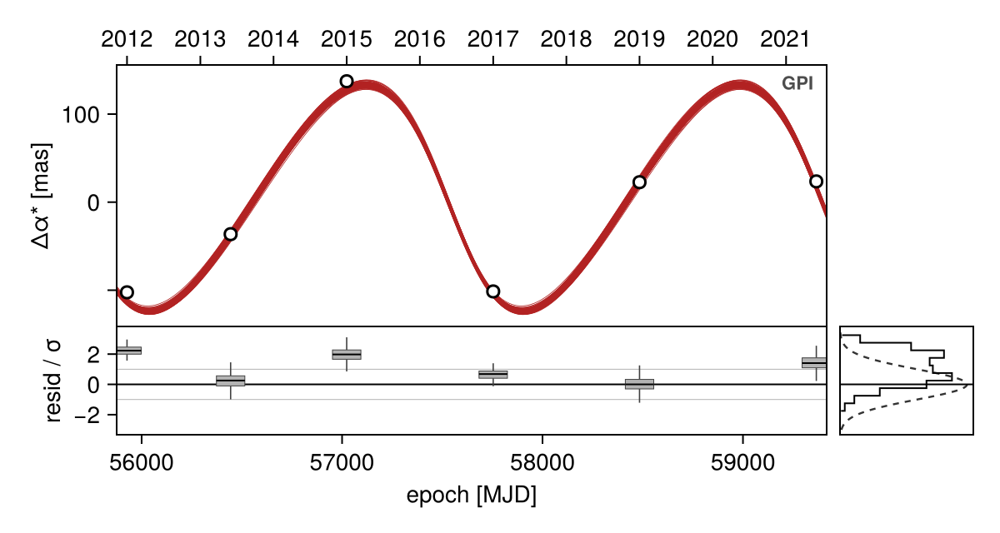
skypanel! takes curvecolor= as well — there it is the colour the phase ramp is built from.
datastyle accepts markersize, resid_markersize, strokewidth, σ_linewidth, σ_color, σeff_linewidth and σeff_color; an unrecognised key is an error rather than a silent no-op. A Makie theme (set_theme!, with_theme) still governs fonts, sizes and axis decorations, but the curve and marker colours are set explicitly by the panels and are not read from the theme.
All keywords
| Keyword | Meaning |
|---|---|
N=250 | Number of posterior draws to solve |
seed=0 | Seed for the draw selection |
ndraws=nothing | Cap on the draws each panel renders |
show_sky=nothing | Force the sky panel on or off (default: on when the model has angular observables and at least one orbit) |
show_phase=nothing | nothing folds only when a single draw is shown; true folds every foldable channel; false folds nothing |
channels=nothing | Restrict the figure to some channels or observables |
whiten=nothing | Divide residuals by their uncertainty (default: on when several draws are shown, and required then) |
boxwidth=nothing | Width of the residual boxes in x units (default: from the epoch spacing) |
gpcurve=nothing | Add each draw's conditioned activity model to its own curve (default: on for several draws) |
gpband=nothing | Correlated-noise bands (default: on only for a single draw) |
tmin=nothing, tmax=nothing | Ends of the epoch grid — MJD, a date string, or a Date (default: from the data and the period) |
ts=nothing | The epoch grid itself, replacing the automatic one |
curvecolor=nothing | Model-curve colour: one colour, or a Dict/NamedTuple keyed by body name |
datastyle=nothing | Marker and error-bar overrides for every panel |
legend=true | Instrument keys on the sky and shared data panels |
figscale=1.0 | Scale the whole figure |
figure=nothing | Draw into an existing (emptied) Figure rather than a new one |
fname=nothing | If set, save the figure to this path |
N, seed, tmin, tmax and ts belong to the octoplot(model, chain; ...) form; if you build a PosteriorSeries yourself, they are its keywords instead.
Related figures
rvplot— the single-draw radial-velocity figure, with every instrument on one axis and phase folds by default. See Radial Velocity Figures.octocorner— the posterior corner plot, below.dotplot— mass against separation or period for every body, coloured by eccentricity.gaiastarplot,gaiatimeplot,hipparcosplot,skytrackplot— absolute-astrometry figures in their own geometry.
Corner plots
octocorner draws the posterior pair plot, using PairPlots.jl:
using CairoMakie, PairPlots
octocorner(model, chain, small=true)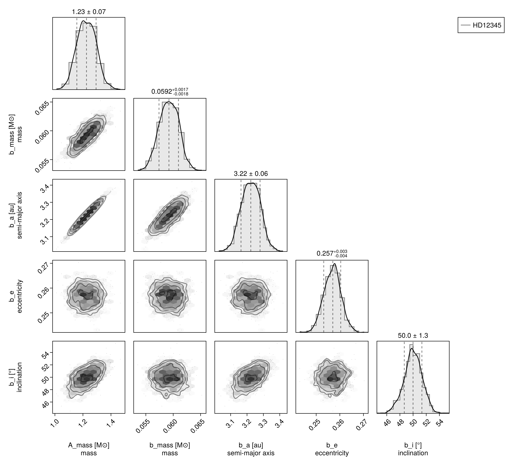
small=true keeps only each body's a, e, i and mass; includecols and excludecols add or remove columns by name. UniformCircular helper pairs and fixed values are dropped automatically. Passing several chains overlays them, which is a convenient way to compare a prior draw with a posterior, or two models with each other.
Advanced topics
Everything below explains why the default figure looks the way it does, and how to reach the machinery underneath it. None of it is needed to make a plot.
How the panels are chosen
octoplot derives its panels from the model, not from a list of flags. Every observation declares its plot channels (plotchannels), each of which is one measured quantity with an associated ObservableQuery — for example radvel(:A, Barycentre) for a stellar reflex RV instrument, or raoff(:b, :A) and decoff(:b, :A) for relative astrometry.
The sky panel is drawn whenever the model has angular observables (i.e. the system block defines plx) and at least one orbit. It shows one phase-coloured track per hierarchy row — each row plotted as its exterior side relative to its interior side, which is exactly the relationship that row parametrizes. For a star with planets that is each planet about the star; for a hierarchical system it generalizes with no special cases (a moon about its planet, an inner pair's barycentre about the outer body).
The queries used for a predicted channel are chosen by default_queries: one per hierarchy row for separations and angles, and the host body against the system barycentre for reflex quantities like radvel and pmra.
RelAstromObs, RadialVelocityObs, MarginalizedRVObs and GaiaDR4AstromObs declare plot channels and appear in octoplot. ImageObs, InterferometryObs, PhotometryObs, G23HObs and HipparcosIADObs do not yet: octoplot still draws the orbits, but those observations' data are not overlaid. This is a gap in the plotting layer rather than a deliberate omission.
One panel per instrument — except where sharing is honest
Channels group by the quantity they measure and by which observation reported it, unless the observation type opts into sharing via sharepanel. The question that setting answers is whether one draw's calibration can stand in for all of them:
- Relative astrometry shares.
platescaleandnorthangleare calibration constants pinned to a fraction of a percent, so every instrument's points land in the same place under any draw. All of them merge onto one separation panel, one position-angle panel, one Δα* panel and one Δδ panel, calibrated by the maximum-posterior draw — the same behaviour Octofitter has always had. - Radial velocity does not. An instrument zero point is a free parameter of order the data range and moves visibly between draws. Each spectrograph gets its own panel, its measurements are drawn exactly as reported, and each draw's model curve carries that draw's own offset and trend. The data stay put; the curves move. That is the only way a posterior cloud and a dataset can share a panel without misrepresenting one of them.
rvplot is the deliberate exception on the other side: it puts every RV instrument back on one axis precisely because it shows a single draw.
Every measurement on every panel it belongs on
(sep, pa) and (Δα*, Δδ) are the same measurement in two bases, related by a rotation with no free parameter in between. A campaign that switched conventions partway through is still one dataset, so all of its astrometry appears on all four panels — the non-native pair projected deterministically, with first-order error propagation. The likelihood still scores only the pair the table actually carries; the projected channels are marked derived and exist for the figure.
A derived channel only opens a panel of its own if you ask for it by name (channels=:sep, as above); otherwise it rides along with a panel some other instrument declared natively.
Why residuals are whitened, and why they are boxplots
When more than one draw is shown the residuals are whitened, and this is not optional: a raw residual is not comparable between draws — the jitter, the offsets and the other bodies' subtracted signals all move — so whiten=false throws unless you also pass ndraws=1. σ_eff includes fitted jitter and, where an observation has a Gaussian-process noise model, that model's predictive variance; its mean is subtracted from the residual too, so the strip shows what the fit is actually left with.
The same argument applies once more inside the strip: those nuisance terms move from draw to draw, so a measurement's z-score is not one number but a distribution, and a single mark per point cannot say how much of the scatter is the fit's own uncertainty. Each point is therefore drawn as a boxplot of (data − model)/σ_eff over the draws — median, quartiles, 1.5 IQR whiskers — with the marginal histogram pooling every draw against a unit normal. Boxes are sized automatically from the spacing of the epochs and are narrow by design; boxwidth= (in x units — days on a time panel, cycles on a phase panel) sets them by hand when a dataset defeats that. With ndraws=1 there is one z-score per point and it is drawn as a marker instead.
Where a fitted noise model goes
A Gaussian process (noisemodel) is conditioned on one draw's residuals, so it belongs to that draw and nothing else. With many draws the honest way to show it is therefore in the curves: each draw's curve is its own orbit plus its own conditioned GP mean (noisecurves), so the panel shows 250 complete models and the spread between them is the uncertainty. Bands are off there, and deliberately — v8 drew one per draw, and 250 envelopes, each a different draw's activity model, is not a readable figure.
With a single draw it is the other way round: the plain orbit curve, its GP-added twin, and a ±σ band between them, which is the picture of what the activity model absorbed. gpcurve=/gpband= force either, and a model whose GP cannot be predicted falls back to the orbit alone with a warning.
Why phase folds are off by default
Folding collapses the epoch axis through one ephemeris. For a single draw that is its own period and its own phase zero, and the fold is exact. For many draws the data can still only be folded once — on the maximum-posterior period — so a chain whose period is broad, or multi-modal, has its measurements placed at phases most of the drawn orbits disagree with, and the panel reads as scatter about a curve instead of as the ambiguity it actually is. Plenty of posteriors are tight enough for it to look fine, which is the trap: whether the picture is honest is a property of the fit, not of the figure.
A channel is foldable when one hierarchy row's contribution to it can be isolated exactly — always true when a single row moves the quantity, and true for observables linear in the separation otherwise. Each draw's curve is folded on its own period even in the many-draw case, so the spread of the curves is the fold uncertainty drawn honestly; it is the single folding of the data underneath them that the default is cautious about.
Model curves as numbers
To get the model curves as plain numbers rather than a plot, evaluate an ObservableQuery over the series:
q = ObservableQuery(radvel, :A, Barycentre)
curves = modelcurves(series, q) # one vector per draw, over series.ts
best = mapcurve(series, q) # the maximum-posterior draw
length(curves), length(best)(100, 283)For the data rather than the curves, Octofitter.residuals(obs, ctx) returns, per channel, the epochs, the calibrated data, the model, the residual and the effective uncertainty; obscontext builds the ctx from a PosteriorSeries.
Positions at future epochs
Solve the system for a draw and query it at whatever epochs you like — this is the route to any epoch outside the figure's own grid:
posys = construct_system(model, chain, 1)
sols = orbitsolve(posys, [mjd("2028-01-01"), mjd("2029-01-01")])
raoff(sols[1], :b, :A) # ΔRA [mas]
decoff(sols[1], :b, :A) # ΔDec [mas]
projectedseparation(sols[1], :b, :A) # [mas]
posangle(sols[1], :b, :A) # [rad]-0.6728137734502615Loop over draws to build a predicted distribution, and plot it however you like.